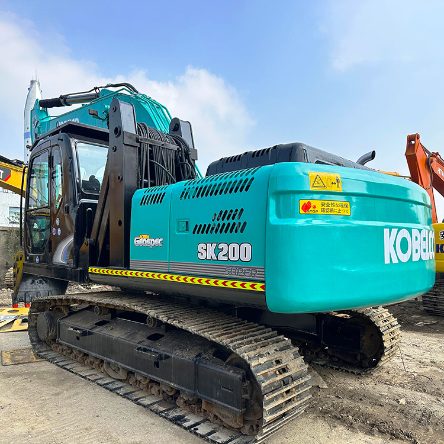

Refurbished Kobelco SK200 Excavator
The Kobelco SK200 is a versatile and powerful 20-ton class crawler excavator widely used across various industries, including construction, mining, and demolition. Known for its robust engine, efficient hydraulic system, and superior digging capabilities, the SK200 is designed to deliver exceptional performance in demanding environments. When looking to save on capital costs without sacrificing quality, a refurbished Kobelco SK200 provides an excellent solution for businesses seeking value and performance.
Honestly, it's almost impossible to buy a brand new excavator from China. They either don't exist or are made in China. If a Chinese seller tells you their Caterpillar/Komatsu/Volvo/Kobelco/Hitachi is brand new, they're lying. Therefore, a refurbished excavator is your best bet.

Here are the detailed specifications for a refurbished Kobelco SK200-8 or SK200-10 excavator:
Operating Weight and Dimensions
- Operating Weight: 19,800–20,600 kg
- Overall Length: ~9.5–9.7 meters
- Overall Width: ~2.99 meters
- Overall Height: ~3.0 meters
- Tail Swing Radius: ~2.75 meters
- Ground Clearance: ~470 mm
- Track Width: 600 mm standard
Engine and Powertrain
- Engine Model:
- SK200-8: Isuzu CC-6BG1T
- SK200-10: HINO J05E Tier 4 Final
- Rated Power Output:
- ~150–158 hp (112–118 kW) @ 2,000 rpm
- Maximum Torque: ~650–700 Nm
- Fuel Tank Capacity: ~400 liters
- Travel Speed: 3.5–5.5 km/h
- Swing Speed: ~11 rpm
- Gradeability: Up to 35°
Hydraulic System
- Main Pump Type: Variable displacement axial piston pump
- Flow Rate: ~2 × 220–240 L/min
- System Pressure: Up to 34.3 MPa
- Hydraulic Oil Capacity: ~250 liters
- Boom Cylinder Bore: ~130 mm
- Arm Cylinder Bore: ~115 mm
- Bucket Cylinder Bore: ~105 mm
Performance Metrics
- Bucket Capacity: 0.8–1.0 m³
- Max Digging Depth: ~6.7 meters
- Max Reach (Horizontal): ~10.1 meters
- Max Dump Height: ~6.8 meters
- Bucket Digging Force: ~145–155 kN
- Arm Digging Force: ~110–120 kN
Cab and Operator Features
- Cab Type: ROPS/FOPS certified
- Display: Color LCD monitor with diagnostics and fuel tracking
- Controls: Electro-hydraulic joysticks with customizable sensitivity
- Comfort: Air-conditioned cab, high-back suspension seat, noise-insulated interior
- Visibility: Wide glass area, rear-view camera, LED work lights
Smart Features and Efficiency
- Fuel Efficiency: VG turbocharger + high-pressure common rail injection
- Emissions Control: EGR cooler + DPF system (Tier 4 Final compliant in SK200-10)
- Auto Idle & Eco Mode: Reduces fuel consumption during low-load operations
- Telematics Ready: KOMEXS system for remote diagnostics and fleet tracking
Attachments Compatibility
- Standard Bucket: 0.8–1.0 m³
- Optional Tools: Hydraulic breaker, demolition shear, compactor, ripper
- Quick Coupler: Hydraulic or manual options available
Refurbishment Scope
Refurbished SK200 units typically include:
- Engine overhaul (injectors, turbo, seals, DPF cleaning if applicable)
- Hydraulic pump recalibration or replacement
- Electrical system rewiring and sensor testing
- Cab restoration (seat, controls, HVAC, monitor)
- Structural repairs (boom welding, bushing replacement, repainting)
Overview of the Kobelco SK200 Excavator
The Kobelco SK200 is designed to combine high digging power with fuel efficiency, making it ideal for a wide range of earth-moving tasks. From excavation and trenching to lifting and material handling, the SK200 excels in tough worksite conditions. Refurbished models are often refurbished by certified experts, ensuring they meet the same performance standards as new units.
Key Specifications of the Kobelco SK200
-
Operating Weight: Approximately 20,000 kg (44,000 lbs)
-
Engine Power: 119 kW (160 horsepower)
-
Bucket Capacity: Varies depending on attachment, generally between 0.8 to 1.2 cubic meters.
-
Max Digging Depth: Up to 6.9 meters (22.6 feet)
-
Max Reach: 9.5 meters (31.2 feet)
-
Max Lifting Capacity: 3,500 kg (7,700 lbs) at a radius of 3 meters
The Kobelco SK200 is powered by a fuel-efficient engine and equipped with a hydraulic system designed for faster and more responsive performance. It is particularly valued for its durability, especially in rough terrain, and for its ability to operate in confined spaces.
Key Features of the Kobelco SK200 Excavator
Engine and Performance
The Kobelco SK200 is equipped with a Hino J05E engine, providing a robust 160 horsepower that delivers ample power for excavation, lifting, and material handling. The engine is designed with fuel efficiency in mind, offering an ideal balance of power and operating cost savings.
The Kobelco ECO mode allows the operator to adjust the performance for fuel savings, which is particularly beneficial in long-term operations where fuel costs can significantly add up. The SK200 is designed to maximize fuel efficiency without compromising on productivity, a feature that is especially appreciated in the construction and mining industries.
Hydraulic System
The SK200 features a highly advanced hydraulic system, which significantly improves performance while reducing fuel consumption. The system is engineered to provide smooth operation with minimal vibration, allowing the operator to carry out complex tasks with precision.
-
Variable Displacement Pump: The hydraulic system uses a variable displacement pump, which adjusts flow according to the load being lifted. This results in improved energy efficiency, faster cycle times, and reduced wear on the hydraulic components.
-
Load-Sensing System: The load-sensing system in the SK200 optimizes hydraulic power by sensing the load and adjusting the hydraulic pressure accordingly. This system maximizes efficiency while minimizing the risk of overloading, which helps preserve the life of the excavator's components.
Operator Comfort and Cabin Design
-
Spacious Operator Cabin: The SK200 features a spacious operator cabin designed with ergonomic controls, adjustable seating, and excellent visibility. The cabin provides a comfortable environment, allowing operators to work for long hours without experiencing fatigue.
-
Climate Control: Many models of the SK200 are equipped with air conditioning and heating, making it comfortable to work in any climate.
-
Control System: The machine is fitted with easy-to-use joysticks and an intuitive control layout, making the operation smoother and less physically demanding for the operator.
Maneuverability and Stability
The Kobelco SK200 is equipped with a durable undercarriage that is built to handle rough and uneven terrain. The machine’s low center of gravity provides excellent stability, which is crucial for working in challenging conditions such as slopes and muddy sites. The undercarriage components are designed for durability, and the tracks are made from high-quality materials that offer superior traction and resistance to wear.
Digging and Lifting Performance
-
Digging Depth: The SK200 can reach up to 6.9 meters (22.6 feet) in digging depth, which allows it to perform deep excavation and trenching tasks with ease.
-
Lifting Capacity: The machine is capable of lifting heavy materials, with a maximum lifting capacity of 3.5 tons at a radius of 3 meters. This makes it suitable for a variety of heavy lifting applications, such as moving large rocks and steel beams.
Benefits of Purchasing a Refurbished Kobelco SK200 Excavator
Opting for a refurbished Kobelco SK200 provides several advantages, especially for businesses looking to balance cost and performance. Some of the key benefits include:
Significant Cost Savings
A refurbished Kobelco SK200 can be up to 30-40% cheaper than a new machine, allowing businesses to acquire a high-quality excavator without breaking the budget. The initial cost savings can be redirected to other operational expenses or investments.
Certified Refurbishment Process
Refurbished units are generally overhauled by experienced technicians who restore the excavator to its original specifications. This process includes inspecting the engine, hydraulic system, undercarriage, and all other vital components. Refurbished machines come with warranties, which offer added peace of mind.
Environmental Impact
By purchasing a refurbished machine, you’re contributing to sustainability efforts by reducing the demand for new manufacturing and minimizing waste. Reusing and refurbishing equipment is an effective way to reduce the environmental impact of the heavy equipment industry.
Faster Return on Investment (ROI)
Due to their lower purchase price, refurbished Kobelco SK200 excavators typically provide a faster return on investment (ROI). The money saved on the initial purchase can be recouped more quickly, enabling you to reinvest in other areas of your business.
Maintenance and Care for the Kobelco SK200 Excavator
To maximize the lifespan and performance of your refurbished SK200, regular maintenance is essential. Below are some maintenance tips to keep your excavator running smoothly:
Engine Maintenance
-
Regularly inspect the air filters and replace them to ensure the engine is getting clean air, which helps improve fuel efficiency and prevent engine wear.
-
Check coolant levels and inspect hoses for leaks to avoid engine overheating.
-
Follow the oil change intervals specified by the manufacturer to ensure the engine runs smoothly.
Hydraulic System Maintenance
-
Check the hydraulic fluid levels regularly and ensure that there are no leaks in the hydraulic system.
-
Inspect hydraulic hoses and seals for wear and tear. Replace any damaged parts promptly to avoid hydraulic fluid leaks.
-
Clean and replace hydraulic filters to prevent clogging and maintain system efficiency.
Undercarriage and Tracks
-
Regularly inspect the tracks for wear and ensure the track tension is properly adjusted to avoid unnecessary strain on the undercarriage components.
-
Clean the undercarriage to remove dirt, mud, and debris that can cause wear and tear on the tracks, rollers, and sprockets.
-
Lubricate the undercarriage components as part of regular maintenance.
Cabin and Operator Area
-
Check the operator’s seat and controls to ensure they are in good condition and functioning correctly.
-
Clean the cabin to maintain visibility, and ensure the air conditioning and heating systems are working properly.
Conclusion
The Kobelco SK200 is a highly capable, durable, and fuel-efficient excavator that excels in various construction and earthmoving applications. With its powerful engine, efficient hydraulic system, and operator-friendly design, the SK200 is a top choice for contractors looking for a reliable machine that can handle a range of heavy-duty tasks.
A refurbished SK200 offers substantial cost savings without compromising on performance. Through proper maintenance and care, the refurbished unit can provide many years of reliable service, making it a smart investment for businesses in need of dependable excavation equipment. If you’re looking to upgrade your fleet while staying within budget, the Kobelco SK200 is an excellent option to consider.
Our Commitment
- 2 years / 4000 hours warranty.
- EPA certified.
- No sweatshop labor.
Contacts

- [email protected]
- Youtube Instagram Facebook
- Navigation: G206 (Sishu Bridge) in Changfeng County, Hefei City, Anhui Province, 200 meters north to the east